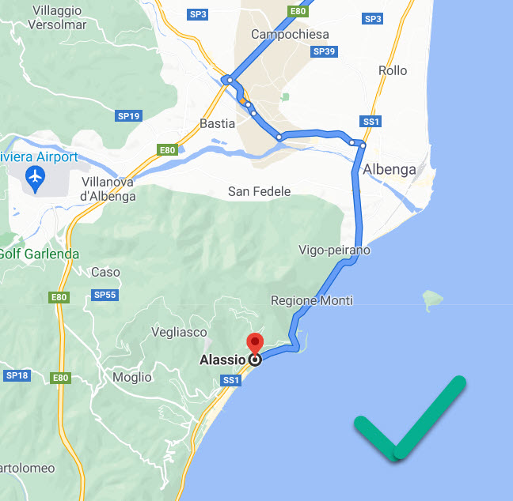
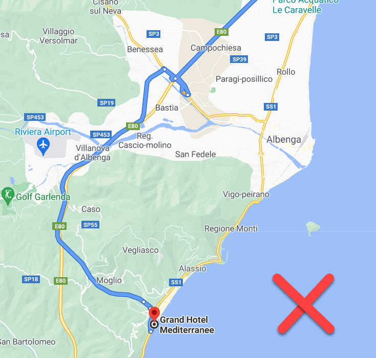

Google Maps zeigt allenfalls nicht die schönste Route nach Alassio an. Für den richtigen Wow-Effekt sollte die Autobahn in Albenga verlassen werden und Alassio über die Küstenstrasse angefahren werden:
Schönster Weg ("Alassio" als Zielort in Google Maps eingegeben):
Schnellster Weg (Hotel als Zielort in Google Maps eingegeben):
Die paar Minuten längerer Anfahrtsweg lohnen sich. Für den Rückweg kann ruhigen Gewissens der schnelle Weg genommen werden.